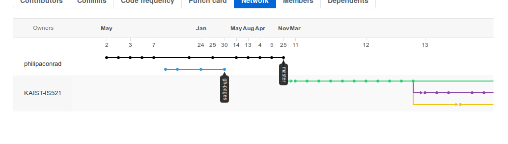

That fuzzy Open Source feeling
Today I had a pleasant suprise on Github. I looked under my old mini-vm project, and saw this under the “Network” tab (which displays forks of your project).

It makes me really happy to know that someone, somewhere liked my project enough to use it for something.